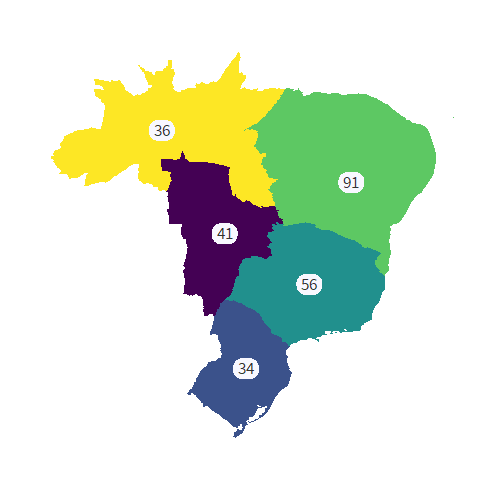
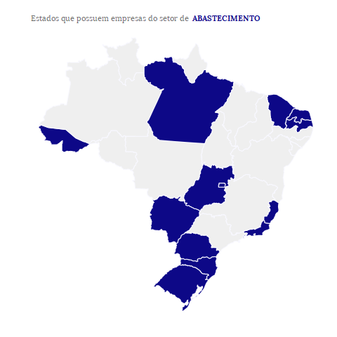
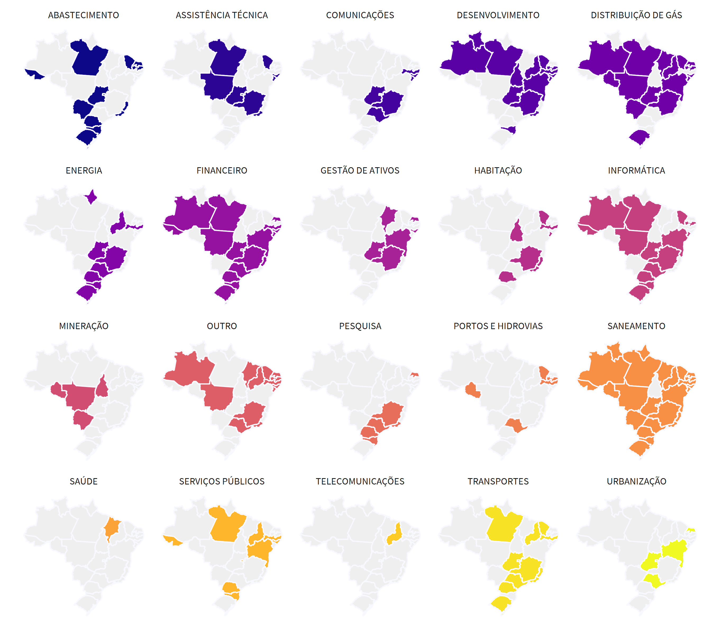

Fruto de intensivo esforço do Tesouro Nacional a fim de consolidar um grande volume de dados sobre o assunto, essa iniciativa reforça o compromisso da instituição com a transparência.
Entendemos que a transparência é o melhor instrumento para que a sociedade tenha condições de fiscalizar o papel dos governos estaduais enquanto donos de empresas tidas como estratégicas. Apenas com informações acessíveis, o cidadão será capaz de avaliar o quão vantajoso é ter um Estado empreendedor, podendo cobrar resultados ou questionar seus representantes.
Referentes ao ano de 2018, as informações apresentadas a seguir comparam os dados entre as 5 regiões territoriais (Nordeste, Norte, Centro-Oeste, Sudeste e Sul) e os vinte e seis Estados mais o Distrito Federal; contrapondo as empresas controladas por sua dependência/não dependência e distintos segmentos empresariais: Abastecimento, Assistência Técnica, Comunicações, Desenvolvimento, Distribuição de Gás, Energia, Financeiro, Gestão de Ativos, Habitação, Informática, Pesquisa, Portos e Hidrovias, Saneamento, Saúde, Serviços Públicos, Transportes, Urbanização e outros.
As informações estão divididas em 3 partes:
- Com quantas estatais se faz um Estado;
- O Estado empreendedor e
- Quais os resultados das empresas para o Estado Acionista.
O primeiro bloco apresenta o quantitativo geral das empresas controladas pelos Estados e demonstra o quantitativo por Região / Estado e informa o total de empresas dependentes e quais seus respectivos segmentos. A segunda seção discorre sobre o lucro / prejuízo dessas empresas além de apresentar um ranking de suas respectivas rentabilidades. Por fim, apresenta-se o resultado total do impacto financeiro líquido das empresas controladas nas finanças públicas estaduais.
Os dados aqui disponibilizados foram declarados pelos Estados, sendo, portanto, de inteira responsabilidade deles a precisão ou correção dos dados aqui consolidados.
Com quantas estatais se faz um estado?
No Brasil, existem 258 empresas controladas pelos Estados. A região Nordeste apresenta a maior concentração de estatais, com 91 empresas (35,27% do total), seguida pela região sudeste, com 56 empresas (21,71%); centro-oeste, com 41 empresas (15,89%); norte do país com 36 empresas (13,95%) e, por fim, a região sul com 34 empresas (13,18%).
O mapa abaixo mostra como ficaria cada região brasileira caso sua área fosse aumentada ou reduzida na proporção das empresas estatais que possui.
O gráfico abaixo mostra a quantidade de estatais por Estado, separadas entre dependentes e não dependentes. Em termos relativos, 41% das empresas declaradas pelos Estados são dependentes, ou seja, 106 empresas do total de 258. O número de estatais por Estado varia de 2 a 20, sendo que alguns deles possuem apenas empresas dependentes, e outros apenas não dependentes.
Dessa forma, São Paulo lidera o ranking com um total de 20 empresas, seguido por Minas Gerais com um quantitativo de 19 e, em terceiro lugar, Goiás com 16. Entre os Estados com a menor quantidade de empresas controladas, temos Tocantins, Roraima e Amapá com, respectivamente, 3, 3 e 2 empresas. Em termos de dependência, Rio de Janeiro apresenta o maior número de empresas (11), seguido pelo Estado do Pará (8) e, empatados com um total de 7 empresas, os Estados de Pernambuco, Sergipe, Acre e Distrito Federal. Ao focalizar em empresas não dependentes, Minas Gerais lidera com um conjunto de 16 empresas, acompanhada por São Paulo (14), Goiás e Rio Grande Sul (11) e Paraná com um quantitativo de 10 empresas.
Quantidade de empresas por Estado
- Dependentes
- Não Dependentes
- Não Informado

Ao examinar as empresas controladas pelos segmentos empresarias, observa-se que os setores de Desenvolvimento, de Saneamento e Financeiro são os mais representativos, com 32, 28, 22 empresas, respectivamente. Entre os seguimentos com menor número de empresas, destacam-se os setores de Saúde e Telecomunicações (1 empresa), Mineração (4) e Pesquisa / Portos e Hidrovias (6).
 Em relação ao critério dependência, o setor Desenvolvimento possui o maior número de empresas dependentes (14), seguido pelo setor de Abastecimento (10) e pelos de Serviços Públicos / Assistência Técnica com 9 empresas. Por outro lado, o setor Financeiro caracteriza-se pelo maior quantitativo de empresas não dependentes (20), seguido de perto pelo de Saneamento (19), Desenvolvimento (15), Energia (12) e Distribuição de Gás (11).
Quantidade de empresas por setor
- Dependentes
- Não Dependentes
- Não Informado

Uma combinação dessas informações (Estados / quantitativo empresas / setores empresarias) pode ser visualizada abaixo.
Quantidade de empresas por Estado e por setor

O estado empreendedor
A atuação do Estado por meio de empresas estatais tem previsão no artigo 173 da Constituição de 1988:
Art. 173. Ressalvados os casos previstos nesta Constituição, a exploração direta de atividade econômica pelo Estado só será permitida quando necessária aos imperativos da segurança nacional ou a relevante interesse coletivo, conforme definidos em lei.
Portanto, a atuação do Poder Público na atividade econômica, por meio de suas empresas, apresenta-se como uma exceção. Além disso, a fim de garantir o alcance do “relevante interesse coletivo”, a eficiência, a eficácia e a efetividade devem estar presentes na atuação das estatais.
Nesse sentido, é importante quantificar os lucros / prejuízos das empresas controladas pelos Estados, além de avaliar o patamar de rentabilidade das mesmas. O gráfico abaixo demonstra a distribuição dos lucros ou prejuízos, categorizado por dependentes e não dependentes. Ao longo de 2018, os números revelam que 43,4% das estatais obtiveram prejuízo. Ao se analisar especificamente as empresas não dependentes, tem-se que 31,9% delas tiveram perdas financeiras. Esse valor passa para 61,9% quando se leva em consideração apenas as estatais dependentes. Nesse sentido, observa-se que em termos relativos o percentual de empresas com prejuízos financeiros em 2018 caracterizadas como dependentes é o dobro do total das não dependentes.
Distribuição das empresas em relação ao lucro ou prejuízo
- Empresas com Prejuízo
- Empresas com Lucro
- Sem informação

Em termos de segmento empresarial, o setor que apresenta o maior lucro para o período foi o de Saneamento com um ganho total de aproximadamente 5 bilhões de reais (R$ 4.995 milhões). Logo em seguida, tem-se o segmento de Energia com um resultado em torno de 2 bilhões de reais (R$1.949 milhões), acompanhado de perto pelos setores Financeiro e Desenvolvimento com lucro de 1,5 bilhões de reais (R$ 1.545 milhões e R$ 1.496 milhões, respectivamente). Pelo outro lado, o setor de Transporte possui o pior resultado para o período com prejuízos de aproximadamente 1,5 bilhões de reais (R$ 1.420 milhões). Em seguida, o segmento de Pesquisa com cerca de 200 milhões de reais (R$ 192 milhões) em perdas e o setor de Habitação com valores próximos de 100 milhões de reais em prejuízo (R$ 116 milhões).
Lucros e Prejuízos totais por setor de atuação
- Prejuízo
- Lucro

Uma relação importante de se avaliar é o resultado da empresa (lucro / prejuízo) em relação ao tamanho do seu patrimônio. No diagrama abaixo, plota-se no eixo y (ordenada) o patrimônio líquido das empresas e no eixo x (abscissa) os lucros/prejuízos correspondentes. De forma simplificada, observa-se uma relação positiva entre a magnitude (positivo / negativo) do resultado apresentado e o correspondente patrimônio líquido. Este resultado já era de certa forma esperado pelo fato dos valores nominais para lucro / prejuízo divulgados estarem associados com o tamanho da empresa – representado aqui pelo seu patrimônio líquido.
Relação entre Lucro / Prejuízo e o Patrimônio Líquido das empresas
Passe o mouse sobre os pontos para obter detalhes sobre a empresa. É possível selecionar uma área para zoom (clicando-se duas vezes sobre o gráfico retorna-se à visão principal).
Dessa forma, uma maneira complementar de se comparar os retornos dos diferentes setores analisados é por meio de um indicador de rentabilidade que pondere a magnitude do resultado da companhia pelo seu tamanho. Nessa linha de raciocínio, elaboramos um indicador calculado pela razão entre o lucro / prejuízo e o patrimônio líquido que representa uma estimativa da rentabilidade das empresas controladas pelos Estados. O gráfico abaixo apresenta os principais resultados.
Estimativa de rentabilidade das empresas
Rentabilidade definida como a razão entre lucro ou prejuízo e patrimônio líquido. As empresas são representadas por pontos, da seguinte forma:
● rentabilidade positiva ● rentabilidade negativa
Estão excluídas 76 empresas sem informação de lucro / prejuízo ou patrimônio líquido, ou que apresentaram patrimônio líquido menor ou igual a zero. Não estão apresentadas três empresas para as quais o valor do indicador de rentabilidade ficou abaixo de -200%.

Novamente, observa-se a conclusão que a quantidade relativa de estatais dependentes com rentabilidade negativa (61,9%) é o dobro do valor em comparação com as estatais não dependentes (33,6%). Ademais, ao se explorar os números das rentabilidades pelo critério de dependência e por seguimentos empresariais, verifica-se que o as empresas do setor Gestão de Ativos que são não dependentes possuem a maior média de rentabilidade para o ano de 2018 com uma cifra de 58%. Também se destacam as empresas não dependentes de Desenvolvimento, Distribuição de Gás, Serviços Públicos e Comunicações com rentabilidades médias de 36%, 23%, 17% e 15% respectivamente. Em termos de estatais dependentes, Abastecimento e Distribuição de Gás aparecem com as maiores rentabilidades médias para o período com 30% e 18% respectivamente. Com rentabilidades médias negativas, ressalta-se o seguimento de Transportes com -2% para o grupo de empresas não dependentes, enquanto para o conjunto das dependentes os setores de Habitação, Urbanização e Portos / Hidrovias com -36%, -27% e -11% respectivamente.
Estimativa de rentabilidade média das empresas por setor
Rentabilidade definida como a razão entre lucro ou prejuízo e patrimônio líquido. Estão excluídas 76 empresas sem informação de lucro / prejuízo ou patrimônio líquido, ou que apresentaram patrimônio líquido menor ou igual a zero.
- Média Dependentes
- Média Não Dependentes

O estado acionista
Quais os resultados das empresas para o Estado Acionista?
Há uma relação financeira entres os Estados e suas estatais que se dá, sobretudo, por meio de:
▲ Dividendos — recursos, decorrentes de uma parte do lucro apurado, que as estatais transferem para o Estado.
▼ Subvenções e Aumento de Capital — recursos que os Estados transferem para as empresas.
Quando os Estados recebem mais recursos por meio de dividendos do que transferem por meio de subvenções ou aumento de capital, pode-se dizer que as estatais contribuem para o resultado fiscal do Estado. No entanto, quando as saídas de recursos dos Estados são maiores que as entradas, podemos dizer que tais empresas oneram o resultado fiscal do Estado.
De forma geral, ao longo de 2018 ,os Estados transferiram R$ 11,4 bilhões como reforço de capital, R$ 4,7 bilhões como subvenções e receberam R$ 2,2 bilhões de dividendos das empresas, ou seja, houve repasses líquidos para as estatais da ordem de R$ 14 bilhões.
No entanto, é importante ressaltar que 120 das 258 empresas (46,5%) não informaram valores para quaisquer dessas operações — sejam dividendos, subvenções ou aumentos de capital.
O mapa abaixo mostra, em termos agregados, o resultado líquido (entradas menos saídas) dos Estados nas suas relações com as estatais estaduais. Em 2018, os únicos Estados que receberam mais recursos das estatais do que transferiram foram o Rio Grande do Sul, Mato Grosso do Sul e Sergipe. Observe-se que as empresas do Estado de São Paulo, que receberam repasses líquidos no montante de R$ 10 bilhões, representaram 72% do resultado líquido negativo total. Assim, por corresponder a quase o triplo da soma dos valores de todos os outros estados, o Estado de São Paulo não é mostrado no gráfico.
Resultado Líquido das Empresas para o Estado Acionista
O Estado de São Paulo, que efetuou transferências líquidas para suas empresas no montante de R$ 10 bilhões (ou 72% do total nacional), não é mostrado para evitar uma distorção na escala do gráfico.